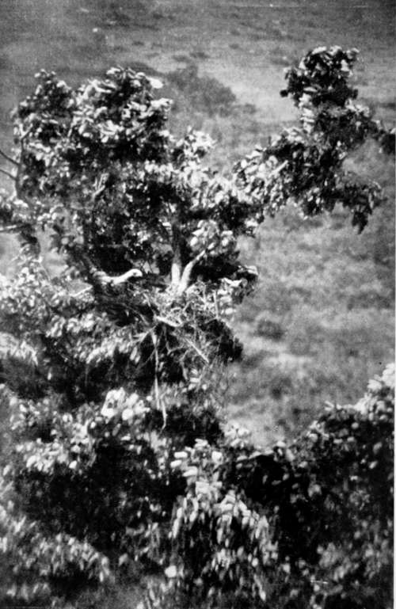
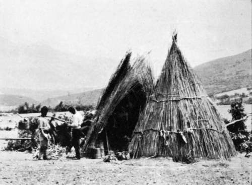
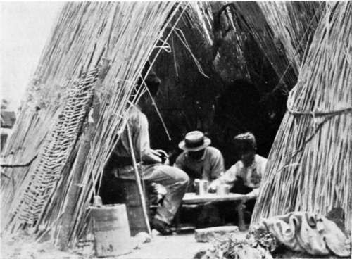

Collecting In The Dobrudscha. Part 9
Description
This section is from the book "Bird-Hunting Through Wild Europe", by R. B. Lodge. Also available from Amazon: Bird-Hunting Through Wild Europe.
Collecting In The Dobrudscha. Part 9
Returning this day in single file along a stony path, three of us walked over a Viper coiled up behind a stone. As Rettig passed just behind me, the last man saw it strike at his foot, and called us back. If he had been a bare-footed native he would have been in all probability bitten. He told me that he had known several fatal cases of bites from this small Viper, which has two small curved horns in its nose. I picked it up alive by the tail, too quickly for it to strike, and held it up to show them how it was powerless to turn round to bite in that position ; but they were much alarmed, and very unwilling for me to approach it until I assured them that I could do it all right. It had been coiled up behind a flat stone in the middle of the path, where it was almost invisible.
Imperial Eagle Returning To Nest
Our third and last day we spent in the endeavour to reach a distant nesting-place of the great Eagle Owl (Bubo maximus). However, we never got there, for after we had gone quite fifteen kilometres I was told that it was still twenty more, and as it was then 3 p.m. we decided to give up the quest.
We had delayed too long at a nest of Imperial Eagle (Aquila imperialis), which we had found on the way. It being in a favourable position, an attempt was made to photograph the bird, which had left the nest as we approached. Hiding up among some bushes on the hillside almost level with the nest, which was in a silver poplar in a valley, we waited some time in vain. Then I sent away two of the men, Andreas and Dimitru, as there were five of us, too many by far. Still another wait, and no sign of the Eagle. I was just saying to Rettig, 'Elle ne vient pas,' and was preparing to get up, when a low hiss from him made me look up, and I saw that she had alighted on the nest, unfortunately behind a branch which hid nearly all her body. She gave me a better chance a few moments later, after which she left. But she soon returned. Neither time was she in a good position, but I had to take it or nothing.
Then Rettig handed me the rifle, and I fired after taking a steady aim. She seemed to fall, but recovered and went off apparently all right, and though I thought she had fallen round the corner of the hill, both of my companions declared she had flown right away. I couldn't make it out, for I knew the aim had been right, and that I had been perfectly steady ; and I felt that it was impossible I had missed her. There was a chance that the bullet had struck the branch which stuck up in front of her, but I could see no mark on examining it with my glass. There were two much-incubated eggs in this nest.
Late that night we heard that a boy had found this Eagle still alive, and had killed her with a stick and left her. I was very disgusted, and would far sooner have missed her altogether than have killed her for nothing like this, for we were leaving early the next morning, and the distance was too far to send and fetch her in.
All this high ground was full of people with their flocks and herds, who had been flooded out of the Balta, the low, swampy country surrounding and between the various arms and channels of the Balta, by the inundations. The valley in which we had found the Imperial Eagle was traversed in every direction by herdsmen. Flocks of sheep were grazing on the bare hillsides, where hardly a blade of grass was visible ; and their owners were camping out in rude conical shelters of reeds until the fall of the water should allow them to return from whence they came. At one of these shepherds' huts we were compelled to go begging for a meal, for when I had sent Andreas away he had thoughtfully taken all the 'grub' with him, and now couldn't be found. We found them milking their flock, and had to wait until they had finished.
Roumanian Shepherds' Hut
A Meal Of Polenta
I had never before known the use of a sheep's tail, now I realized that if useless to the animal it forms a very useful handle for the shepherd. Two men sat at the entrance of a fold enclosing some fifty sheep, and as each animal came forward it was seized by the tail, pulled backwards over the pail and milked dry in less than half a minute, and then pushed forward to make room for another. As soon as they had finished they conducted us into the hut while they set about making some polenta over a fire made in a hole in the ground. Maize meal was cooked like porridge, mixed with water and a pinch of salt, in a round iron pot. This rises like bread and is turned out solid, and cut into slices with a fine string. You can't cut it with a knife. It looks like sponge-cake, and eaten with fresh sheeps' milk isn't half bad; but I shouldn't like to live entirely on it all the year round as these shepherds do. It is very satisfying, and we went on the strength of it until the evening. In fact, Rettig couldn't eat any supper that night, so it lasted him till next day.
By this time we had decided to give up the nesting-place of Bubo maximus, as the distance was too great, and turned off to search a neighbouring hill, an outlying spur of the forest. Here we found a nest in a small oak, from which flew a Spotted Eagle (Aquila clanga). I waited some time for a photograph, hoping it would return ; but as we had been obliged to cut part of a branch away which obstructed the view of the nest, she took alarm and refused to go back to it, though she sat on the tree-top for some time, but in a position impossible to get at with the camera. There was one large white egg in the nest.
The situation was a charming one. Immediately below the nest a small stream fell from one mossy boulder to another on its course down the valley, and its murmur mingled with the rustling of the leaves and the songs of many birds ; while from the valley immediately below rose the cries of the herdsmen and the clanging of the cattle-bells as they wandered hither and thither feeding among the bushes.
Continue to:
- prev: Collecting In The Dobrudscha. Part 8
- Table of Contents
- next: Collecting In The Dobrudscha. Part 10